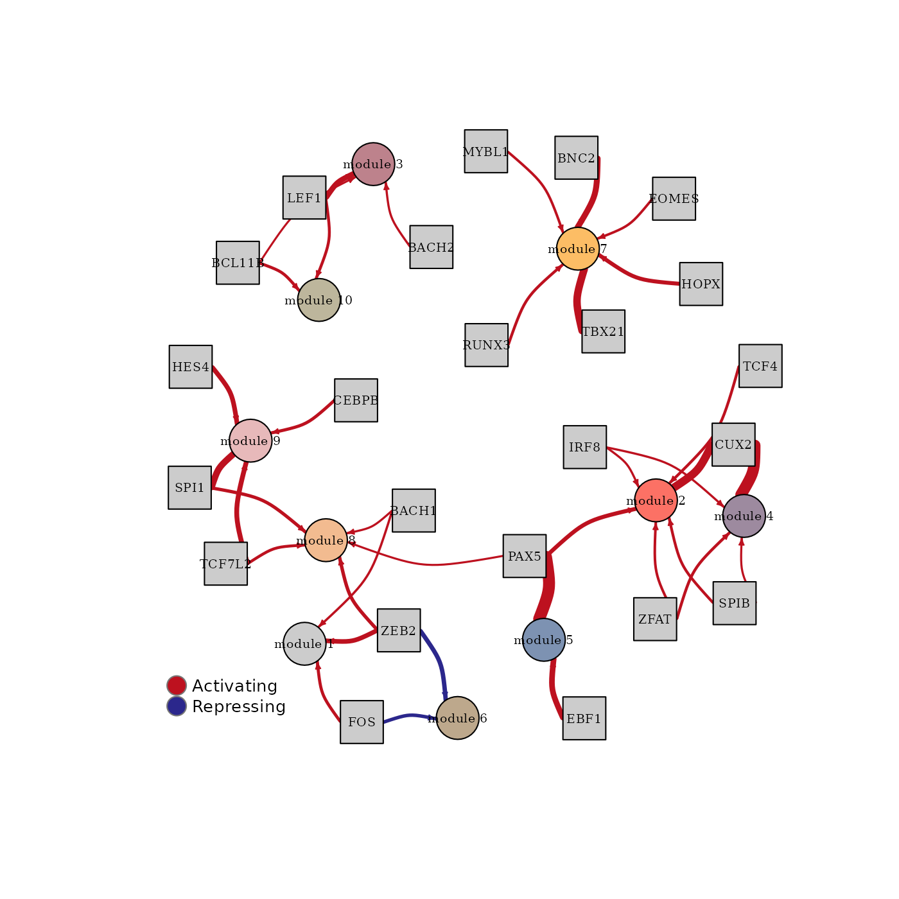

The methods below are described in our article
Larsson I & Held F, et al. (2023) Reconstructing the regulatory programs underlying the phenotypic plasticity of neural cancers. Preprint available at bioRxiv; 2023.03.10.532041.
Here we demonstrate the scregclust workflow using the PBMC data from 10X Genomics (available here). This is the same data used in an introductory vignette for the Seurat package. We use Seurat for pre-processing of the data.
# Load required packages
library(Seurat)
library(scregclust)Download the data
We are focusing here on the filtered feature barcode matrix available as an HDF5 file from the website linked above. The data can be downloaded manually or using R.
However you obtain the data, the code below assumes that the HDF5
file containing it is placed in the same folder as this script with the
name
pbmc_granulocyte_sorted_3k_filtered_feature_bc_matrix.h5.
url <- paste0(
"https://cf.10xgenomics.com/samples/cell-arc/2.0.0/",
"pbmc_granulocyte_sorted_3k/",
"pbmc_granulocyte_sorted_3k_filtered_feature_bc_matrix.h5"
)
path <- "pbmc_granulocyte_sorted_3k_filtered_feature_bc_matrix.h5"
download.file(url, path, cacheOK = FALSE, mode = "wb")Load the data in Seurat and preprocess
To perform preprocessing use Seurat to load the data. The file ships with two modalities, “Gene Expression” and “Peaks”. We only use the former.
pbmc_data <- Read10X_h5(
"pbmc_granulocyte_sorted_3k_filtered_feature_bc_matrix.h5",
use.names = TRUE,
unique.features = TRUE
)[["Gene Expression"]]
#> Genome matrix has multiple modalities, returning a list of matrices for this genomeWe create a Seurat object and follow the Seurat vignette to subset the cells and features (genes).
pbmc <- CreateSeuratObject(
counts = pbmc_data, min.cells = 3, min.features = 200
)
pbmc[["percent.mt"]] <- PercentageFeatureSet(pbmc, pattern = "^MT.")
pbmc <- subset(pbmc, subset = percent.mt < 30 & nFeature_RNA < 6000)SCTransform
is used for variance stabilization of the data and Pearson residuals for
the 6000 most variable genes are extracted as matrix z.
pbmc <- SCTransform(pbmc, variable.features.n = 6000)
#> Running SCTransform on assay: RNA
#> Running SCTransform on layer: counts
#> vst.flavor='v2' set. Using model with fixed slope and excluding poisson genes.
#> Variance stabilizing transformation of count matrix of size 19168 by 2686
#> Model formula is y ~ log_umi
#> Get Negative Binomial regression parameters per gene
#> Using 2000 genes, 2686 cells
#> Found 6 outliers - those will be ignored in fitting/regularization step
#> Second step: Get residuals using fitted parameters for 19168 genes
#> Computing corrected count matrix for 19168 genes
#> Calculating gene attributes
#> Wall clock passed: Time difference of 13.02882 secs
#> Determine variable features
#> Centering data matrix
#> Set default assay to SCT
z <- GetAssayData(pbmc, layer = "scale.data")
dim(z)
#> [1] 6000 2686Use scregclust for clustering
We then use scregclust_format which extracts gene
symbols from the expression matrix and determines which genes are
considered regulators. By default, transcription factors are used as
regulators. Setting mode to "kinase" uses
kinases instead of transcription factors. A list of the regulators used
internally is returned by get_regulator_list().
out <- scregclust_format(z, mode = "TF")sample_assignment is initialized to be a vector of
1s of length ncol(z) and can be filled with a
known sample grouping. Here, we do not use it and just keep it uniform
across all cells.
genesymbols <- out$genesymbols
sample_assignment <- out$sample_assignment
is_regulator <- out$is_regulatorRun scregclust with number of initial clusters set to 10
and test several penalties. noise_threshold controls the
minimum \(R^2\) a gene has to achieve
across clusters. Otherwise it is placed in the noise/rag-bag cluster.
The run can be reproduced with the command below. A pre-fitted model can
be downloaded from GitHub
for convenience.
# set.seed(8374)
# fit <- scregclust(
# z, genesymbols, is_regulator, penalization = seq(0.1, 0.5, 0.1),
# n_cl = 10L, n_cycles = 50L, noise_threshold = 0.05, center = FALSE,
# sample_assignment = sample_assignment
# )
url <- paste0(
"https://github.com/sven-nelander/scregclust/raw/main/datasets/",
"pbmc_scregclust.rds"
)
path <- "pbmc_scregclust.rds"
download.file(url, path)
fit <- readRDS("pbmc_scregclust.rds")Analysis of results
Results can be visualized easily using built-in functions. Metrics
for helping in choosing an optimal penalty can be plotted by calling
plot on the object returned from
scregclust.
plot(fit)
The results for each penalization parameter are placed in a list,
results, attached to the fit object. So
fit$results[[1]] contains the results of running
scregclust with penalization = 0.1. For each
penalization parameter, the algorithm might end up finding multiple
optimal clusterings. The results for each such clustering are contained
in the list output. This means that
fit$results[[1]]$output[[1]] contains the results for the
first final clustering. More than one may be available.
In this example, two final configurations were found for the lowest penalization and only a single configuration for all other penalization parameters.
To plot the regulator network of the first clustering for
penalization = 0.1 the function
plot_regulator_network can be used.
plot_regulator_network(fit$results[[1]]$output[[1]])